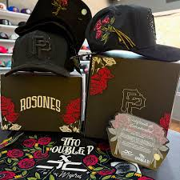

Marcas y Tipos de Gorras
| Marca | Tipo de Gorra | Descripción |
|---|---|---|
| New Era | Gorra de tito doble p | Clásica gorra de tito doble p, ajustable. |
| caps | Gorra rosones | Gorra para tapar el sol y lucir tu cabeza. |
| jc | Gorra tirty one | Gorra ligera y bonita. |
| patito | Gorra de patitos | Gorra de diseño, con estilo único. |
Ejemplo de Gorra

Descripción de la gorra: la gorra de tito doble p es una colaboracion muy grande
Otra Gorra
Descripción de la gorra: la gorra es una colección de una gorra en colaboración con Tito Double P.
Ejemplo de Gorra

Descripción de la gorra: uno de los modelos más exclusivos del año 2025.
Otra Gorra
Descripción de la gorra: Gorra de silicón suave y elástico .